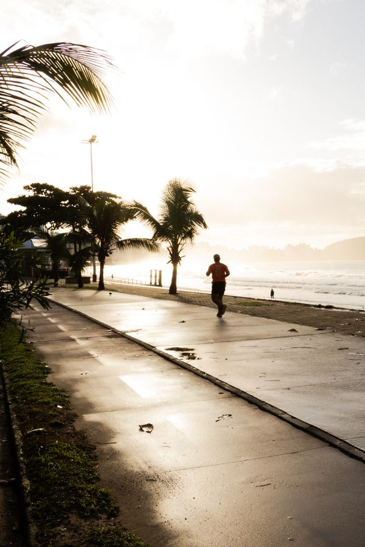

Exercise Timing and Sleep: Morning vs. Evening Workouts

Exercise is one of the most reliable sleep improvers known — better evidence than most supplements, gadgets, and teas combined. People who exercise regularly fall asleep faster, sleep deeper, and wake up feeling more restored. That part isn’t controversial.
The controversial part is when. Conventional wisdom says morning workouts are best and evening workouts ruin sleep. The real answer is more forgiving than that.
The Short Version
- Exercise improves sleep — full stop: this is one of the most consistent findings in sleep research. If you do nothing else on this list, do this.
- Morning and afternoon are the safest bets: well-studied, reliably good for sleep — and morning outdoor exercise adds daylight exposure, which anchors your body clock too.
- The “never exercise at night” rule is overstated: moderate evening exercise is fine for most people. The problem is specifically vigorous exercise very close to bedtime.
- It varies by person: if you sleep great after 8 PM workouts, the research average doesn’t apply to you. Your own sleep is the experiment that matters.
- Consistency beats perfect timing: the best workout time for your sleep is the time you’ll actually do, week after week.
Why Exercise Helps Sleep
A few mechanisms, all plausible and probably all contributing: exercise raises daytime body temperature (and the post-exercise cooldown mimics the pre-sleep temperature drop), it burns off stress hormones, it deepens slow-wave sleep, and it anchors your circadian rhythm — especially outdoor exercise, which pairs movement with daylight. It’s also one of the few interventions that helps both falling asleep and staying asleep.
The effect isn’t subtle in the research: regular exercisers consistently report better sleep quality than sedentary people, across age groups. It’s about as close to a free lunch as sleep science gets.
Morning Workouts: The Gold Standard
Exercising in the morning — especially outside — is the best-studied timing and the hardest to argue against. You get the movement benefit plus bright light exposure, which is the strongest circadian anchor there is (see our blue light guide for why morning light matters so much). Morning exercisers also tend to be more consistent, since the day hasn’t had a chance to derail the plan yet.
If mornings work for your life, this is the default recommendation. Done.
Afternoon: The Underrated Slot
Afternoon exercise (roughly 1–5 PM) lines up well with peak body temperature and physical performance — it’s when most people are physically at their strongest. For sleep, it’s essentially as good as morning: far enough from bedtime that core temperature and adrenaline have fully settled.
Evening Workouts: What the Evidence Actually Says
Here’s where the old advice needs updating. The claim “evening exercise ruins sleep” came from reasonable theory (exercise raises core temperature and adrenaline, both opposed to sleep onset) more than from strong data. What newer research actually finds:
- Moderate evening exercise (a jog, a bike ride, a normal gym session ending 2+ hours before bed) doesn’t harm most people’s sleep — and still beats not exercising.
- Vigorous exercise within an hour or two of bed can delay sleep onset for some people. If you’re doing all-out intervals at 10 PM and staring at the ceiling at midnight, the timing is a plausible culprit.
- Huge individual variation. Some people sleep better after evening workouts — possibly from stress relief. Population averages don’t dictate your response.
The practical rule: finish intense workouts at least 1–2 hours before bed. Gentle movement (walking, easy yoga, stretching) is fine right up to bedtime for almost everyone.
What Matters More Than Timing
That you actually do it. The person exercising at the “wrong” time three times a week sleeps better than the person waiting for the perfect morning slot they never use.
That it’s regular. Sleep benefits build over weeks of consistent exercise, not from one heroic session.
That your bedroom supports recovery. Exercise raises the ceiling; your mattress, room temperature, and schedule determine whether you reach it.
The Honest Take
Stop optimizing the hour and start protecting the habit. Morning is marginally best, evening is fine for most people, and the only genuinely bad timing is “vigorous and immediately before bed” — and even that only matters if your sleep says it matters. Pick the time you’ll keep, and keep it.
The best exercise for sleep is the one that happens. Everything else is fine-tuning.